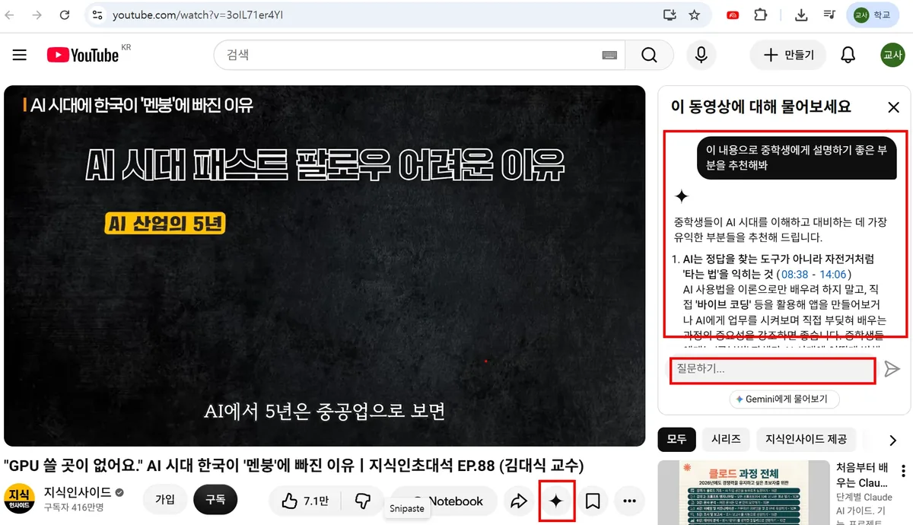

유튜브 영상 아래 ✦ 물어보기 창에서 «요약 → 추천 → 수업 설계» 세 번의 질문을 이어 가며, 강연 영상을 중학교 수업안으로 바꿉니다.
도구 · 유튜브 물어보기 ✦ (+ Gemini 앱 · Gemini Notebook)핵심 기법 · 한 대화에서 이어 묻기(프롬프트 체이닝)와 시간 표시 확인
과업
목표
강연 영상에서 중학생에게 설명하기 좋은 부분을 골라 바이브 코딩 1차시 수업안으로 만들기
영상
«"GPU 쓸 곳이 없어요." AI 시대 한국이 '멘붕'에 빠진 이유 | 지식인초대석 EP.88 (김대식 교수)» — 채널 지식인사이드 · 출연 김대식 교수(KAIST) · youtube.com/watch?v=3oIL71er4YI · 조회수 481만 회(2026년 11월 화면 기준)
대상
중학교 2학년 정보
산출물
① 시간 표시가 붙은 요약 ② 중학생에게 설명하기 좋은 부분 추천 ③ 바이브 코딩 1차시 수업안
제약
학생은 학교 계정 Gemini만 쓰거나 교사 시연으로 진행 · 학생 개인정보 입력 금지 · 강연자의 의견·전망은 사실과 구분 · 수업에서 틀기 전 교사가 영상을 직접 확인
한 정보 선생님이 학교 계정으로 실제로 진행한 대화를 정리했습니다(2026년 11월). 질문은 그때 쓴 말 그대로이고, 답은 실제 답을 줄인 것입니다.
핵심은 한 번에 «수업안 만들어 줘»라고 하지 않고 같은 창에서 세 번에 나눠 묻는 것입니다. 앞 답을 «이 내용으로»라고 받아 다음 질문을 하므로, 단계마다 답을 확인하고 방향을 고칠 수 있습니다(프롬프트 체이닝, prompt chaining: 앞 단계의 출력을 다음 단계의 입력으로 쓰는 방법).
1 대화 흐름 한눈에
① 요약 — 넓게 보기
«영상 내용을 요약해줘» 영상 전체의 지도를 만든다
→
② 추천 — 대상에 맞게 좁히기
«이 내용으로 중학생에게 설명하기 좋은 부분을 추천해봐»
→
③ 설계 — 산출물 만들기
«바이브코딩과 관련된 내용으로 수업을 설계해봐»
질문
이 질문이 하는 일
다음 질문으로 넘어가기 전에 확인할 것
① 요약
영상 전체를 주제별로 정리하고 장면 시간을 붙입니다. 영상을 다 보지 않아도 어디에 무엇이 있는지 압니다.
시간 표시 2~3개를 눌러 그 장면에 정말 그 말이 있는지
② 추천
«이 내용으로» — ①의 요약 안에서 중학생이라는 기준으로 고릅니다. 범위가 좁아집니다.
추천한 구간을 직접 보고, 중학생에게 맞는지 · 강연자의 생각을 사실처럼 옮기지 않았는지
③ 설계
②에서 고른 주제 가운데 바이브 코딩으로 정해 수업안을 만듭니다.
학생이 쓸 AI 도구 · 과장된 표현 · 도입에 쓸 장면의 시간
2 물어보기 창 열기
학교 계정으로 로그인한 크롬에서 유튜브 영상을 엽니다.
영상 아래 버튼 줄(좋아요 · 공유 · 저장 옆)에서 ✦ 물어보기 버튼을 누릅니다. 창이 좁으면 ···(더보기) 안에 있을 수 있습니다.
오른쪽에 «이 동영상에 대해 물어보세요» 창이 열립니다. 맨 아래 질문하기 칸에 질문을 쓰고 보냅니다. 제안 버튼(«동영상을 요약해 줘» 등)을 눌러도 됩니다.
답 속 파란 시간 표시(예: 08:38)를 누르면 영상이 그 장면으로 이동합니다. 확인할 때 씁니다.
답을 문서로 남기거나 길게 이어 가려면 창 아래 Gemini에게 물어보기로 Gemini 앱에서 이어 갑니다.

영상 아래 ✦ 물어보기를 누르면 오른쪽에 질문 창이 열립니다. 이 화면은 두 번째 질문 «이 내용으로 중학생에게 설명하기 좋은 부분을 추천해봐»에 대한 답입니다. 파란 08:38 - 14:06을 누르면 그 구간으로 바로 갑니다.
3 대화 따라 하기
① 요약 영상 전체의 지도 만들기
나영상 내용을 요약해줘
✦ 답 (줄임)• 추격자(패스트 팔로워) 방식의 한계 — 정답이 없는 AI 시대에는 먼저 시도해야 한다 [04:09]~[06:14]
• 인터넷의 중심이 검색에서 대화로 — AI에게 말하면 필요한 앱을 즉석에서 만들어 주는 시대(바이브 코딩) [18:16]
• 빅테크 지형 변화와 GPU 인프라 과제 [20:00]~[24:21]
• 피지컬 AI라는 기회 — 숙련공의 움직임을 배우는 AI 로봇 [25:12]~[30:08]
넘어가기 전 확인 — 시간 표시 2~3개를 눌러 그 장면에 그 말이 있는지 봅니다. «피지컬 AI가 기회»처럼 강연자의 전망인 것은 «의견»으로 표시해 둡니다.
② 추천 중학생이라는 기준으로 좁히기
나이 내용으로 중학생에게 설명하기 좋은 부분을 추천해봐
✦ 답 (줄임)중학생들이 AI 시대를 이해하고 대비하는 데 가장 유익한 부분들을 추천해 드립니다.
1. AI는 정답을 찾는 도구가 아니라 자전거처럼 '타는 법'을 익히는 것 (08:38 - 14:06)
AI 사용법을 이론으로만 배우려 하지 말고, 직접 '바이브 코딩' 등을 활용해 앱을 만들어 보거나 AI에게 업무를 시켜 보며 직접 부딪혀 배우는 과정의 중요성을 강조하면 좋습니다. …
넘어가기 전 확인 — 추천 구간(08:38~14:06)을 직접 봅니다. 중학생에게 맞는 예시인지, «자전거처럼 타는 법» 같은 강연자의 비유·생각을 사실처럼 옮기지 않았는지 확인합니다. 마음에 드는 주제(여기서는 바이브 코딩)를 골라 다음 질문에 넣습니다.
③ 설계 고른 주제로 수업안 만들기
나바이브코딩과 관련된 내용으로 수업을 설계해봐
✦ 답 (줄임)수업안: «AI와 대화하여 나만의 미니 게임 만들기»
도입 — 영상 속 비유 [09:28] 보여 주기, «너라면 AI한테 어떤 게임을 만들어 달라고 하고 싶니?»
전개 — 좋은 요청의 3요소(역할 · 목표와 규칙 · 결과 형식) → 게임 규칙 구상 → AI에게 요청 → 고쳐 달라고 다시 요청
정리 — 만든 게임과 요청 문장 발표, 토의
쓰기 전 확인 — 준비물에 적힌 AI 도구를 중학생이 쓸 수 있는지(학교 계정 Gemini나 교사 시연으로), «5분 만에 완성» 같은 과장이 없는지, 도입 장면 [09:28]이 맞는지 봅니다(5절).
②는 위 화면의 답을 옮긴 것입니다. ①·③은 같은 질문을 Gemini 앱에서 했을 때의 실제 답을 줄인 것으로, 물어보기 창에서는 표현과 시간 표시가 조금 다를 수 있습니다. 같은 질문도 할 때마다 답이 달라지는 것은 정상입니다.
세 질문 (위에서부터 하나씩 보냅니다)
영상 내용을 요약해줘
이 내용으로 중학생에게 설명하기 좋은 부분을 추천해봐
바이브코딩과 관련된 내용으로 수업을 설계해봐
대화가 이어지는 열쇠는 «이 내용으로» — 두 번째 질문부터는 앞 답을 받아 범위를 좁힙니다. ① 넓게 요약 → ② 대상(중학생)으로 좁힘 → ③ 주제(바이브 코딩)를 정해 산출물. 중간에 마음에 들지 않으면 «2번 말고 다른 부분을 추천해 줘», «도입을 더 짧게»처럼 같은 창에서 고쳐 달라고 합니다.
4 더 정확하게 — 조건을 붙인 질문
짧은 질문으로도 흐름은 충분히 이어집니다. 답을 더 검증하기 쉽게 받고 싶으면 같은 세 질문에 조건을 붙입니다. 물어보기 창이나 Gemini 앱(영상 주소를 함께 붙여넣기) 어디서든 쓸 수 있습니다.
다듬은 질문 ① · 요약(시간 표시 · 사실과 의견 구분)
이 영상 내용을 요약해 주세요.
- 핵심 주제 4가지, 주제마다 2~3줄
- 각 내용 끝에 그 말이 나오는 영상 시간을 [분:초]로
- 강연자의 의견·전망과 확인할 수 있는 사실을 구분해서
다듬은 질문 ② · 추천(대상 맞춤)
이 내용 가운데 중학교 2학년 정보 수업에서 설명하기 좋은 부분 2가지를 추천해 주세요.
- 고른 까닭
- 중학생 말로 바꾼 설명 포인트 3개
- 학생에게 던질 질문 1개
- 근거가 되는 영상 시간 [분:초]
다듬은 질문 ③ · 1차시 수업 설계
바이브 코딩과 관련된 내용으로 중학교 2학년 정보 1차시 수업을 설계해 주세요.
- 수업 목표 3개
- 도입: 영상의 어느 부분([분:초])을 보여 주고 무엇을 물을지
- 전개: AI에게 잘 부탁하는 법과 미니 게임 만들기 활동
- 정리: 발표와 토의 질문
- 학생 활동지 1쪽, 평가 관점 3개
조건: 학생은 학교 계정 Gemini만 쓰거나 교사 시연으로 진행, 학생 이름 등 개인정보는 입력하지 않도록 안내
단계
짧은 질문에 더한 것
왜
① 요약
[분:초] · 사실과 의견 구분
각 내용을 영상 위치와 연결해 검증할 수 있게 하고, 다음 단계로 넘어갈 내용의 성격을 미리 표시합니다.
② 추천
학년·교과 · 근거 시간
선택 기준을 분명히 하고, 추천 결과도 영상에서 확인할 수 있게 둡니다.
③ 설계
도입·전개·정리 형식 · 도구와 개인정보 조건
출력 형식을 정하고, 실제 수업에서 문제가 될 부분을 미리 막습니다(마지막 줄은 5절 ①에서 생김).
5 검증 포인트
①~④는 이 선생님이 실제로 고친 것이고, ⑤는 이어 묻기에서 일반적으로 확인할 점입니다.
① 학생이 쓸 AI 도구 — 첫 수업안은 준비물에 학교 밖 여러 회사의 AI 챗봇을 적었습니다. 중학생이 쓸 수 있는지는 서비스의 연령 기준과 학교 방침에 따라 다릅니다. 학교 계정 Gemini나 교사 시연으로 바꿨습니다(다듬은 질문 ③의 마지막 줄이 그래서 생겼습니다). ② 영상 시간과 인용 — [09:28] 같은 장면은 시간 표시를 눌러 그 말이 맞는지 봅니다. 모델이 시간이나 말을 틀리게 붙일 수 있습니다. ③ 사실과 주장 — «한국이 로봇 기술 1등 국가가 될 수 있다»는 강연자의 전망입니다. 수업에서는 «김대식 교수의 생각»으로 소개하고 학생이 동의·반대 까닭을 말하게 합니다. ④ 과장된 표현 — «5분 만에 완성»은 강연 속 비유입니다. 실제 수업에서는 오류와 수정이 반복되므로 «여러 번 고쳐 가며 완성한다»고 안내합니다. ⑤ 앞 단계 오류의 전파 — ①의 잘못된 시간 표시는 ③의 «도입: [분:초] 보여 주기»까지 그대로 이어집니다. 다음 질문으로 넘어가기 전에 확인합니다.
6 근거까지 확인하려면 — Gemini Notebook
물어보기 창과 Gemini 앱은 수업 아이디어를 빨리 얻는 데 적합하고, Gemini Notebook은 답마다 자막의 근거 문장을 눌러 볼 수 있어 활동지·퀴즈처럼 정확해야 하는 자료에 적합합니다. 노트북은 올린 소스를 근거로 답하는 도구입니다(근거 제한, grounding: 답의 근거를 제공한 자료로 한정하는 것 · 사례 6).
새 노트북에서 소스 추가 → YouTube에 같은 주소를 넣고 아래를 묻습니다.
프롬프트 4 · 사실·주장 분리 표 (노트북)
이 강연에서 나온 말 가운데 확인할 수 있는 사실 3개와 강연자의 주장이나 전망 3개를 골라 표로 정리해 주세요.
표(영상 속 말 | 사실/주장 | 그렇게 본 까닭). 학생이 "이건 사실일까, 주장일까?"를 토론할 수 있게 써 주세요.
프롬프트 5 · 영상 보며 푸는 활동지 (노트북)
영상 가운데 바이브 코딩을 설명하는 부분을 보며 학생이 푸는 활동지를 만들어 주세요.
- 영상에 나오는 순서대로 질문 5개(빈칸 채우기 2, 짧은 답 3)
- 마지막에 "AI에게 만들어 달라고 하고 싶은 게임" 쓰는 칸
- 정답은 맨 끝에 따로, 각 정답의 근거가 된 영상 속 말을 한 줄로
프롬프트 4의 «그렇게 본 까닭» 열은 분류 근거를 드러내 교사가 모델의 판단을 검토하게 하고, 표는 그대로 학생 활동 자료가 됩니다. 프롬프트 5의 정답별 근거 문장은 정답 검증 시간을 줄입니다.
단, «사실»로 분류된 문장도 영상 속 발언일 뿐이므로 수업에서 사실로 제시하려면 별도 출처로 확인합니다.
7 응용
상황
방법
다른 교과
두 번째 질문의 «중학생»을 «고등학교 1학년 과학 수업»처럼 내 학년·교과로, 세 번째 질문의 «바이브코딩»을 내 단원 주제로 바꿉니다. 과학 다큐멘터리, 역사 강연, 진로 인터뷰 모두 같은 흐름으로 됩니다.
영상을 고르기 전
첫 질문만 하고 «이 영상에 중학생 수업에 맞지 않는 부분이 있다면 알려 줘»를 이어 묻습니다.
화면 속 글자가 중요할 때
슬라이드·손글씨처럼 자막에 없는 글자는 구글 렌즈의 텍스트 복사로 가져와 질문에 붙입니다.
웹 기사·공문
Gemini 앱에 웹 주소를 넣거나 글을 붙여넣으면 같은 세 단계로 쓸 수 있습니다. 시간 표시 대신 «근거 문장 인용»을 요구합니다.
두 영상 비교
노트북에 영상 두 개를 넣고 «두 영상이 같은 주제에 대해 말하는 내용을 비교표로, 출처를 꼭 달아서»라고 묻습니다.
핵심 원리
긴 자료를 요약 → 추천 → 설계로 나눠 같은 창에서 이어 물으면 단계마다 답을 확인하고 방향을 고칠 수 있습니다. 대신 앞 단계의 오류가 뒤로 전파되므로 첫 답에서 시간 표시와 인용을 확인합니다.
강연자의 생각을 사실처럼 옮기지 않도록, 사실과 주장을 가르는 최종 판단은 교사가 합니다.
문제 해결 — 영상 아래 ✦ 물어보기 버튼이 보이지 않으면(계정·지역·영상에 따라 다름) gemini.google.com 새 채팅에 영상 주소를 붙여넣고 같은 세 질문을 이어 보냅니다. 주소 뒤의 &t=, &list= 부분은 지웁니다. Gemini 앱이 영상을 읽지 못하면 설정의 연결된 앱에서 YouTube가 켜져 있는지 봅니다. 학교에서 막아 두었을 수 있습니다.
영상을 읽지 못하고 제목·설명만으로 그럴듯한 요약을 만드는 경우도 있는데, 시간 표시 2~3개를 열어 보면 드러납니다. 영상 길이를 넘는 시간 표시가 있으면 요약 전체를 다시 받습니다.
노트북에서는 자막이 없는 영상이나 비공개 영상이 «스크립트를 사용할 수 없음»으로 실패합니다. 그럴 때는 유튜브 설명란의 스크립트 표시에서 글을 복사해 붙여넣습니다.